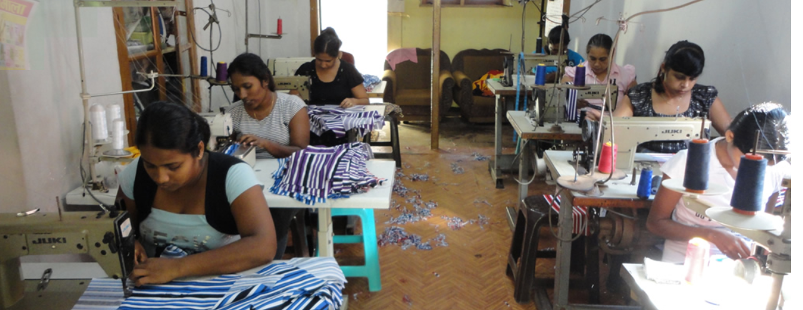

Our story


The Kuweni Garments is a home based established small scale garment factory foot on deep down south cost
of Sri Lanka.The factory is ready to sew your needy garment to suit your body and the mind too.
Kuweni (Queenalso known as Kuvanna, was a ancient queen in Sri Lankn who was spinning cotton - beyond 543 BC)
is a dream of a young couple namely Ramesha Uyanahewa and Sandamali Guruge.
Both are favour in desingning, color blending , style machimg , pattern making and sewing too.
But totally they are not manufacturers earlier,
Ramesha was a pattern maker and Sandamali was an English teacher in a reputed school in Matara district.
But they dremt together to make people style and fashionable with cloting.
With that idea they started a small scale garment factory with 10 village seamstresses and now the man
power nears more than 25 village women, skilled soft finger tips make the garment move in a style to suit you to
make your dream clothing a reality…
The Kuweni Garments is a home based established small scale garment factory foot on deep
down south cost of Sri Lanka.
The factory is ready to sew your needy garment to suit your body and the mind too.
Kuweni (Queenalso known as Kuvanna, was a ancient queen in Sri Lankn who was spinning
cotton - beyond 543 BC) is a dream of a young couple namely Ramesha Uyanahewa and Sandamali Guruge.
Both are favour in desingning, color blending , style machimg , pattern making and sewing too.
But totally they are not manufacturers earlier, Ramesha was a pattern maker and Sandamali was an
English teacher in a reputed school in Matara district. But they dremt together to make people style and
fashionable with cloting. With that idea they started a small scale garment factory with 10 village
seamstresses and now the man power nears more than 25 village women, skilled soft finger tips make the
garment move in a style to suit you to make your dream clothing a reality…
As the main product of our factory , the Handloom is well reputed in European market.
Not only that we can handle any material varieties from silk to gorgiet.
and as a reinforcement to the forthcoming buyers we do the fist Sample free …
If the buyer satisfied with the sample we go for the production.
And we are ready to handle the exporting with our import export license reputed with the EDB Sri Lanka..